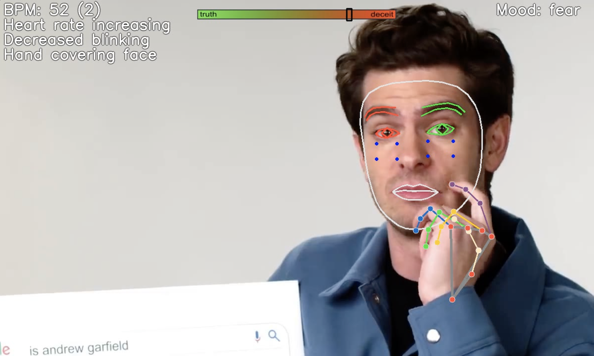
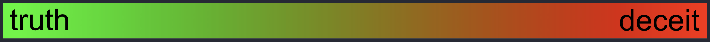

Visual facial BPM
POS rPPG on both cheeks (Wang 2017). HUD shows BPM, SNR, and the pulse waveform.
Open-source research dashboard
Truthsayer is a camera-based cue dashboard for interviews and recordings: heart rate from the face, blink and gaze change, lip and hand adapters, Eulerian motion magnification, facial-motion VRMS, optional voice pitch, utterance windows, and a 60-second dual talking calibration. Cue-load is an arousal/concordance index — not proof of deception.
Do not treat the meter, “tells,” or cue-load bar as proof of deception. Independent work (DDPM 2021, DePaulo 2003, Harnsberger 2009) shows small effects, high false-positive risk, and chance-level commercial voice-stress tools. Research, training, and exploratory analysis only.

Live HUD: Face Mesh landmarks, cue-load bar, POS rPPG waveform, and motion panel. Marker tracks cue load, not guilt.
POS rPPG on both cheeks (Wang 2017). HUD shows BPM, SNR, and the pulse waveform.
Eulerian bandpass on the face crop (Wu 2012). Amplifies micro-movement in the motion x18 panel.
RMS of Face Mesh landmark velocity. Bursts can be speech, expression, or fidget — not a lie label.
Autocorrelation F0, RMS dB, spectral peak. Off until --voice. Worst independently validated modality.
Blink rate, gaze shift, lip compression, hand-on-face, FER mood. Relative to the subject’s own baseline.
Cue stats over a voiced statement (~0.6 s min, 0.8 s silence to close). Score statements, not isolated frames.
30 s factual answers, then 30 s instructed false answers, then freeze. Interview z-scores vs truth-talk.
Operational actions only: continue, flag_review, need_more_data. Face-only / motion-only clusters never flag review. Never “lying.”
Answer general-knowledge questions truthfully. Builds the truth-talk template.
Invent false answers to similar questions. Builds a directed-fabrication template, not a guilt score.
Utterances are z-scored against truth-talk and compared to the fabrication template. N skips a phase, Enter/Space advances, Q quits.

Both phases at 0 (--cal-true 0 --cal-lie 0) restore the old silent 120-frame warmup. Closer-to-fabrication is a low-stakes template match, not a lie label.
Python 3.9 + TensorFlow 2.10 + CUDA 11.2 / cuDNN 8.1 inside .venv. GPU notes in the repo.
cd E:\Truthsayer
& .\.conda\python.exe scripts\setup_gpu_venv.py
.\.venv\Scripts\Activate.ps1
python intercept.py --input 0 --landmarks 1 --flip 1 --voice --logQuit with Q. Confirm the GPU with python -c "import tensorflow as tf; print(tf.config.list_physical_devices('GPU'))".
| Claim | What we do with it |
|---|---|
| DePaulo 2003: median cue effect ~d = 0.10 | Measure many weak cues; never treat any one as decisive. |
| DDPM 2021: POS pulse MAE 3.16 bpm; pulse + rules ~63% | Prefer rPPG and gaze over micro-expression counts. |
| GLD 2021: VGG “P(lie)” 57.4% vs 58.4% majority baseline | Keep statement windows. Skip their face CNN. Face-only never flags review. |
| Harnsberger 2009: commercial voice-stress at chance | Microphone analysis is optional and off by default. |
| No unique autonomic signature of deception | HUD says cue load. ReAct never prints “lying” or “deceit.” |